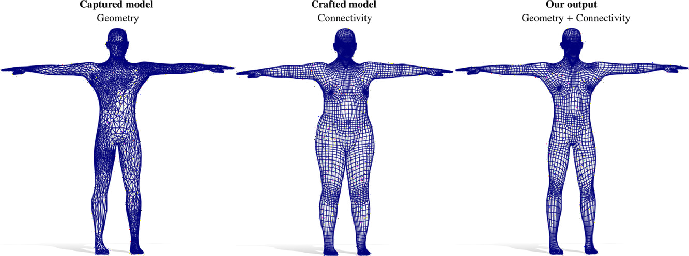
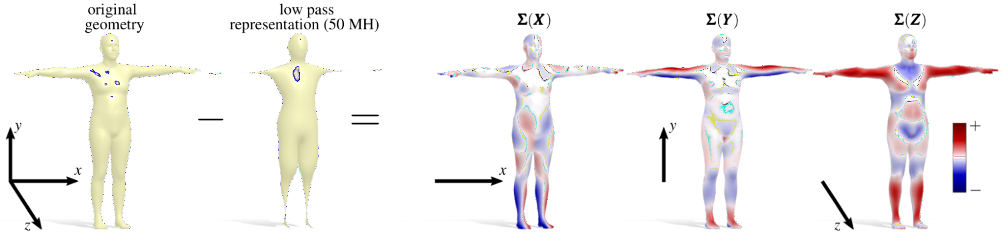
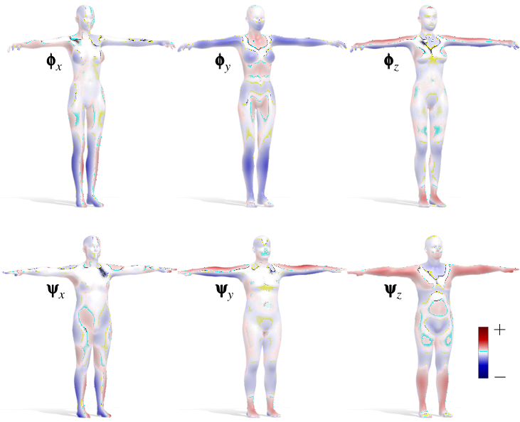
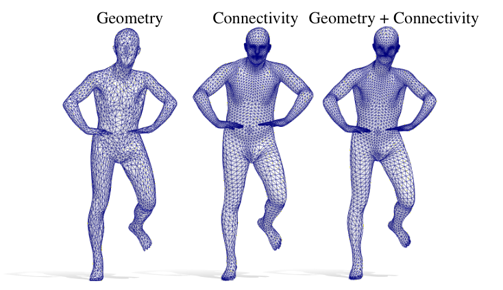
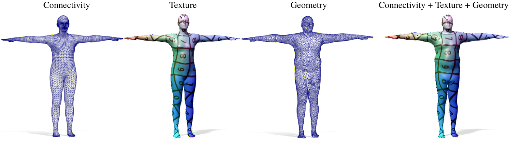
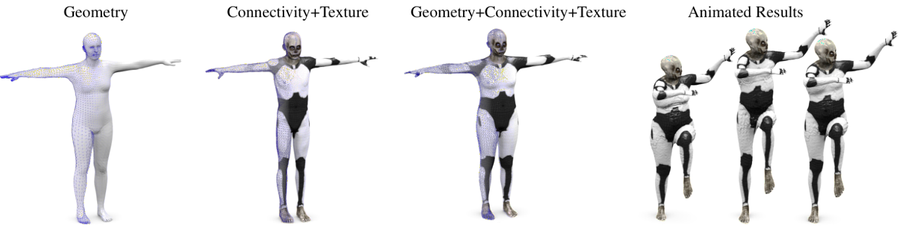

Abstract
In digital world reconstruction, 2-dimensional surface of real objects are often obtained as polygonal meshes after an acquisition procedure using 3D sensors. However, such representation requires several manual efforts from highly experts to correct the irregularity of tessellation and make it suitable for professional applications, such as those in the gaming or movie industry. Moreover, for modelling and animation purposes it is often required that the same connectivity is shared among two or more different shapes. In this paper we propose a new method that exploits a remeshing-by-matching approach where the observed noisy shape inherits a regular tessellation from a target shape which already satisfies the professional constraints. A fully automatic pipeline is introduced based on a variation of the functional mapping framework. In particular, a new set of basis functions, namely the Coordinates Manifold Harmonics (CMH), is properly designed for this tessellation transfer task. In our experiments an exhaustive quantitative and quality evaluation is reported for human body shapes in T-pose where the effectiveness of the proposed functional remeshing is clearly shown in comparison with other methods.
Method
The standard Manifold Harmonics (the eigenfunctions of the Laplace–Beltrami operator) are intrinsic: they describe the shape but forget where it sits in space. CMH add to a small set of Manifold Harmonics three extra functions, one per coordinate, that capture the part of the 3D embedding the low-frequency basis cannot represent. With this intrinsic/extrinsic basis, a functional map between the scan and the template recovers both the correspondence and the geometric details, and the template mesh is then deformed onto the scan.



Applications
Once the scan shares the connectivity of the template, everything defined on the template comes for free: textures, UV maps, skinning weights and rigs.


Python version (2026)
The whole pipeline is also available in Python as pyCMH, which needs only NumPy and SciPy and adds ZoomOut refinement in the CMH basis, robust Laplacians, local-global ARAP remeshing and automatic landmarks. The original MATLAB code is in the CMH repository.
Publications
- CMH: Coordinates Manifold Harmonics for Functional RemeshingR. Marin*, S. Melzi*, P. Musoni, F. Bardon, M. Tarini, U. CastellaniEurographics Workshop on 3D Object Retrieval (3DOR 2019), pp. 63–70
- Intrinsic/extrinsic embedding for functional remeshing of 3D shapesS. Melzi, R. Marin, P. Musoni, F. Bardon, M. Tarini, U. CastellaniComputers & Graphics, vol. 88, pp. 1–12, 2020
BibTeX
If you use this work, please cite:
@inproceedings{cmh20193dor,
title = {{CMH: Coordinates Manifold Harmonics for Functional Remeshing}},
author = {Marin, Riccardo and Melzi, Simone and Musoni, Pietro and Bardon, Filippo and Tarini, Marco and Castellani, Umberto},
booktitle = {Eurographics Workshop on 3D Object Retrieval},
pages = {63--70},
year = {2019},
publisher = {The Eurographics Association},
doi = {10.2312/3dor.20191063}
}@article{melzi2020intrinsic,
title = {Intrinsic/extrinsic embedding for functional remeshing of 3D shapes},
author = {Melzi, Simone and Marin, Riccardo and Musoni, Pietro and Bardon, Filippo and Tarini, Marco and Castellani, Umberto},
journal = {Computers \& Graphics},
volume = {88},
pages = {1--12},
year = {2020},
publisher = {Elsevier},
doi = {10.1016/j.cag.2020.02.002}
}Resources
Related work
- A Functional Skeleton Transfer (SCA 2021)
- GIM3D: A 3D Dataset for Garment Segmentation (STAG 2022)